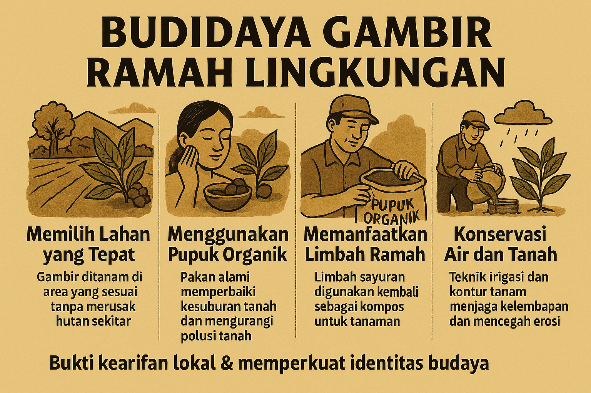

Kenali sejarah, manfaat, dan proses budidaya gambir asli dari petani lokal.
Gambir adalah hasil pertanian dari tanaman Uncaria gambir, yang telah digunakan sejak ratusan tahun lalu sebagai bahan obat tradisional, pewarna alami, dan bahan industri. Indonesia, khususnya Sumatera dan Banten, dikenal sebagai salah satu penghasil gambir berkualitas.
Digunakan dalam pengobatan tradisional untuk meredakan sakit perut, luka, dan sebagai antiseptik alami.
Ekstrak gambir sering dipakai dalam produk perawatan kulit karena sifat antioksidannya.
Dimanfaatkan sebagai bahan penyamak kulit dan pewarna alami dalam tekstil.
Petani menanam, merawat, dan memanen gambir dengan teknik tradisional yang ramah lingkungan. Proses pengolahan dilakukan secara hati-hati untuk menjaga kualitas dan khasiat alami gambir.
